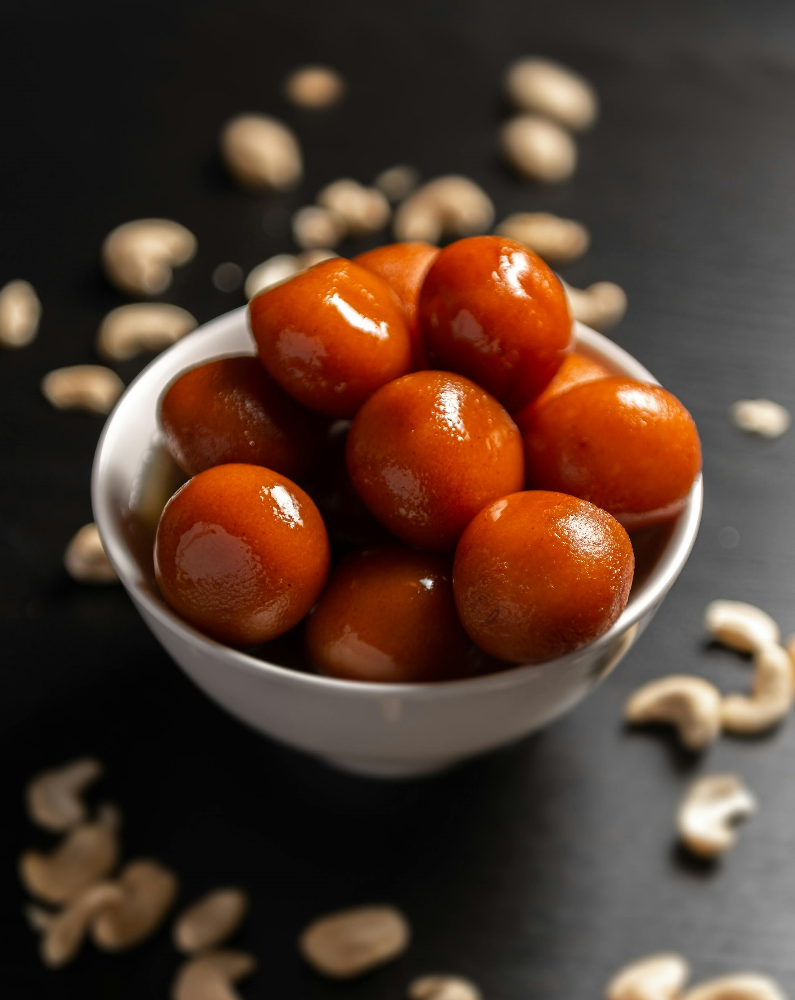

Ingredients For the Gulab Jamun Balls:
1 cup milk powder
1/4 cup all-purpose flour
1/4 teaspoon baking soda
2 tablespoons ghee (clarified butter) or unsalted butter
1/4 cup milk (add more if needed)
1 tablespoon yogurt
1 1/2 cups sugar
1 1/2 cups water
1/4 teaspoon cardamom powder
1/2 teaspoon rose water (optional)
1/2 teaspoon lemon juice
Ghee or oil
1 Boil Sugar and Water: In a pan, combine sugar and water. Bring to a boil, stirring occasionally until the sugar is fully dissolved.
2 Add Flavorings: Add cardamom powder, rose water (if using), and lemon juice. Reduce the heat and let it simmer for about 5 minutes. The syrup should be slightly sticky but not too thick. Set aside to cool.
1 Combine Dry Ingredients: In a mixing bowl, combine milk powder, all-purpose flour, and baking soda.
2 Add Wet Ingredients: Add ghee (or butter), yogurt, and a little milk to the dry ingredients. Mix gently to form a dough. The dough should be soft but not sticky. Add more milk if needed, a little at a time.
3 Shape the Balls: Divide the dough into small, smooth balls. They should be about 1 inch in diameter. Make sure there are no cracks, as they can cause the balls to split during frying.
Soak the Gulab Jamun: Drain and Soak: Once fried, remove the Gulab Jamun balls from the ghee/oil and drain them on paper towels. Immediately transfer them into the warm sugar syrup. Let them soak for at least 30 minutes to absorb the syrup.
